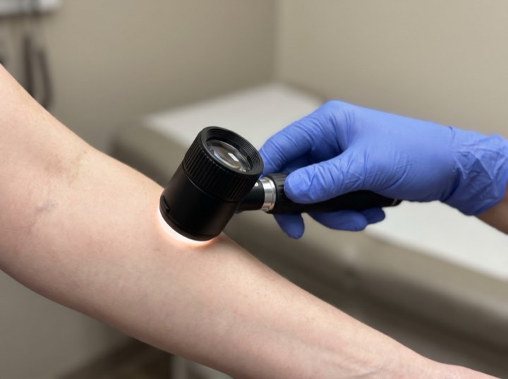
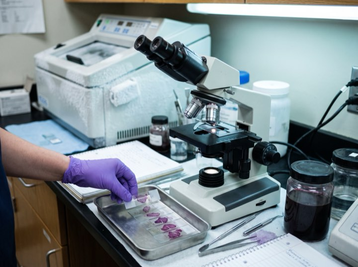
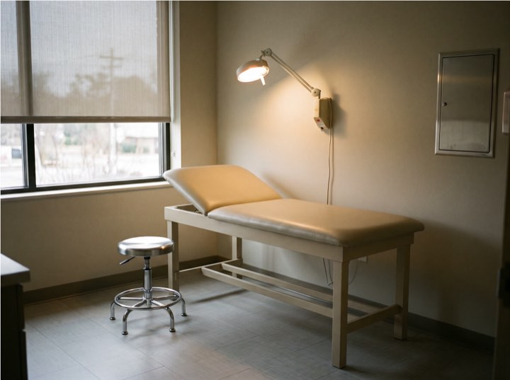
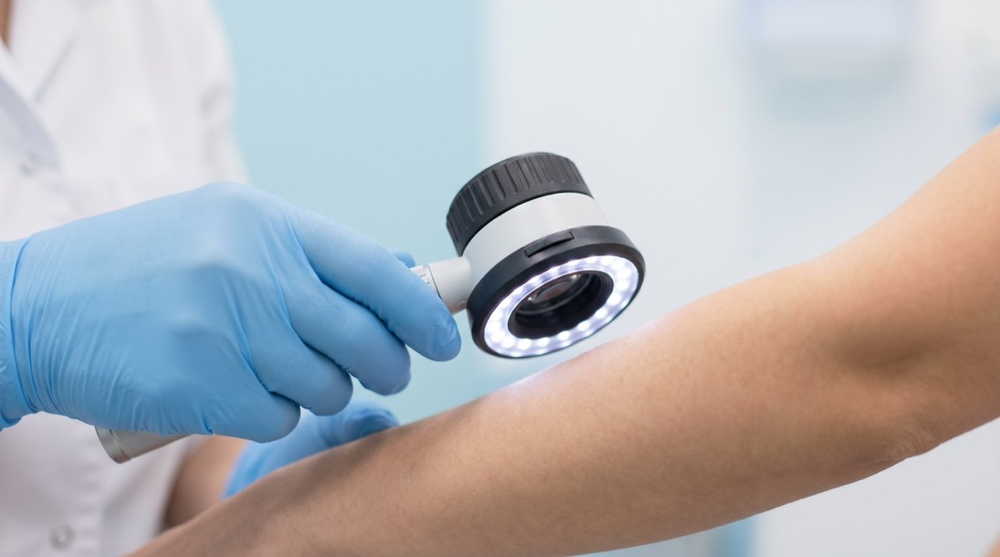

If it changed
What happens when you bring it in.
It is looked at under the dermatoscope the same day, and if it needs the lab, it goes to the lab.




Medical · Surgical · Cosmetic
Medical dermatology, skin cancer surgery and a separate cosmetic clinic. If something has changed shape, colour or size, that is the appointment to make this week, and anything suspicious is biopsied at the same visit.

Services
Medical dermatology runs on insurance and referral. The cosmetic clinic runs separately, with its own booking and published pricing.
Screening, biopsy and Mohs micrographic surgery on site, so diagnosis and removal don't mean two separate waits.
Acne, eczema, psoriasis, rosacea and hair loss. Most insurance accepted, and biologics managed in house.
Eczema, birthmarks and adolescent acne, in appointments long enough for a child to settle.
Injectables, lasers and medical-grade skincare, with published pricing. Booked separately from medical visits.
Results
Process
Medical and cosmetic run on different calendars and different money. Getting this right saves you weeks.
Worried about a spot, a rash or a mole? Medical. Wanting to change how your skin looks? Cosmetic. If unsure, book medical.
Online, with insurance details taken up front, so the first visit isn't twenty minutes of paperwork.
Full-body skin checks run about thirty minutes. Anything suspicious is biopsied the same visit wherever possible.
Pathology back within a week, delivered by a person on the phone, with the next step already scheduled.
If it changed
It is looked at under the dermatoscope the same day, and if it needs the lab, it goes to the lab.



Don't sit on it. Skin checks are booking about two weeks out and we hold urgent slots every week for exactly this reason.
Most major insurance accepted. Suspicious lesions biopsied the same visit wherever possible, with pathology back inside a week.